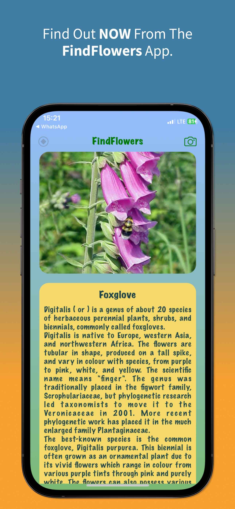

Flower Identification App
Findflowers is a mobile app that helps you identify flowers through photos. Simply take a picture of a flower, and our app will provide you with information about the flower's species, common names, and other interesting facts.
Features:
Download Findflowers today and explore the fascinating world of flowers!